Задача — это один из инструментов для организации работы внутри компании. Сотрудники устанавливают сроки и отслеживают выполнение задач, обмениваются нужной информацией и документами — всё для того, чтобы получить желаемый результат вовремя.
Назначить задачу
Есть четыре варианта создания задачи:
- Перейти в раздел Задачи.
В правом верхнем углу страницы раздела нажмите кнопку + Задача. 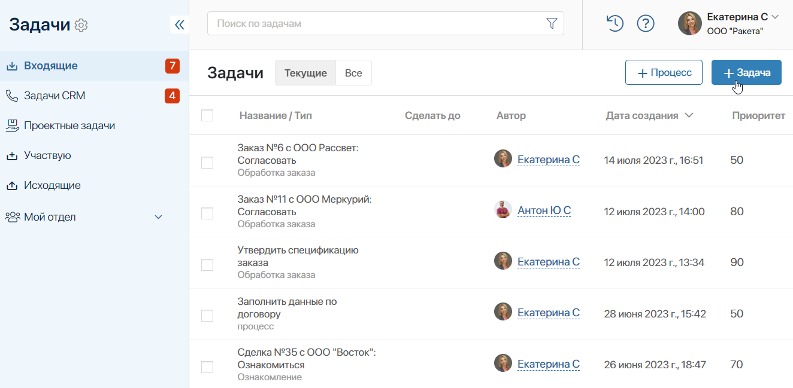
- Нажать на имя пользователя.
Задачи коллегам можно назначать из #ленты сообщений или из переписки по документу. Для этого нажмите на аватар пользователя и в диалоговом окне выберите Поставить задачу.
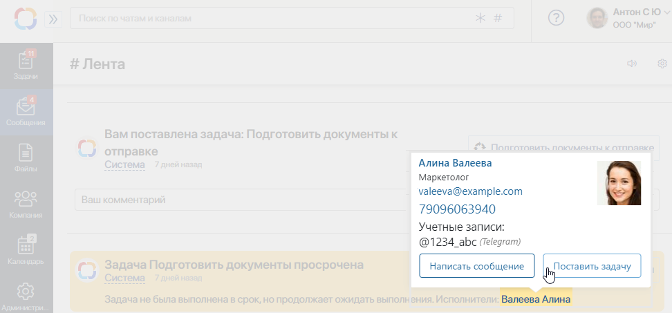
- Открыть карточку элемента приложения.
Вы можете поставить задачу, просматривая элемент приложения. Для этого на панели справа нажмите кнопку + Задача.
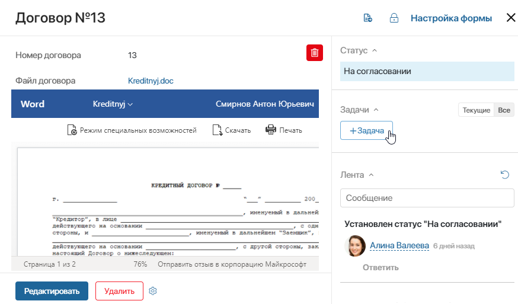
Появится форма для быстрого создания задачи. Чтобы открыть окно с полным набором полей, нажмите на три точки.
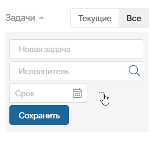
- Открыть файл для просмотра.
Вы можете создать задачу по файлу с его страницы. Для этого в правом верхнем углу выберите , затем на открывшейся боковой панели нажмите + Задача.
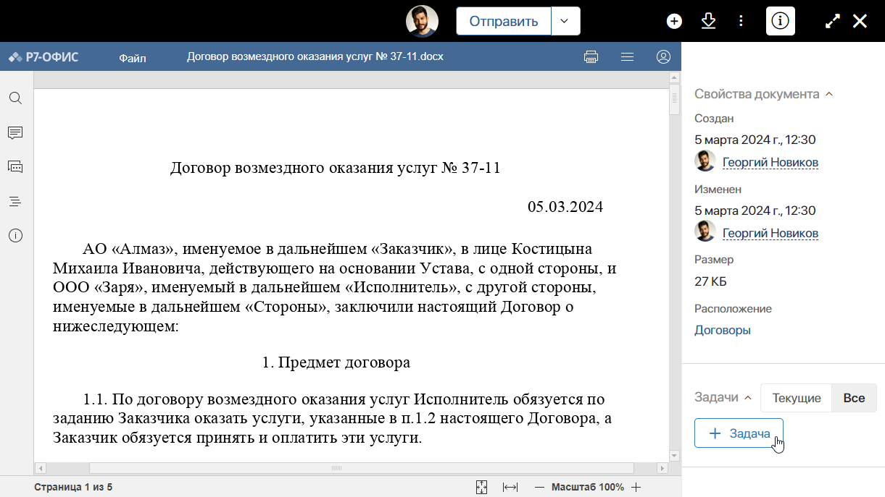
Отобразится форма для быстрого создания задачи.
Заполните форму создания задачи. При этом указанные данные проверяются на корректность. Поля с ошибками выделяются красным цветом. Администратор системы также может включить в настройках компании отображение виджета со списком ошибок валидации.
В поле Тема* укажите название задачи. Оно должно быть содержательным и отражать суть работ. Это позволит сотрудникам легко ориентироваться в списке задач.
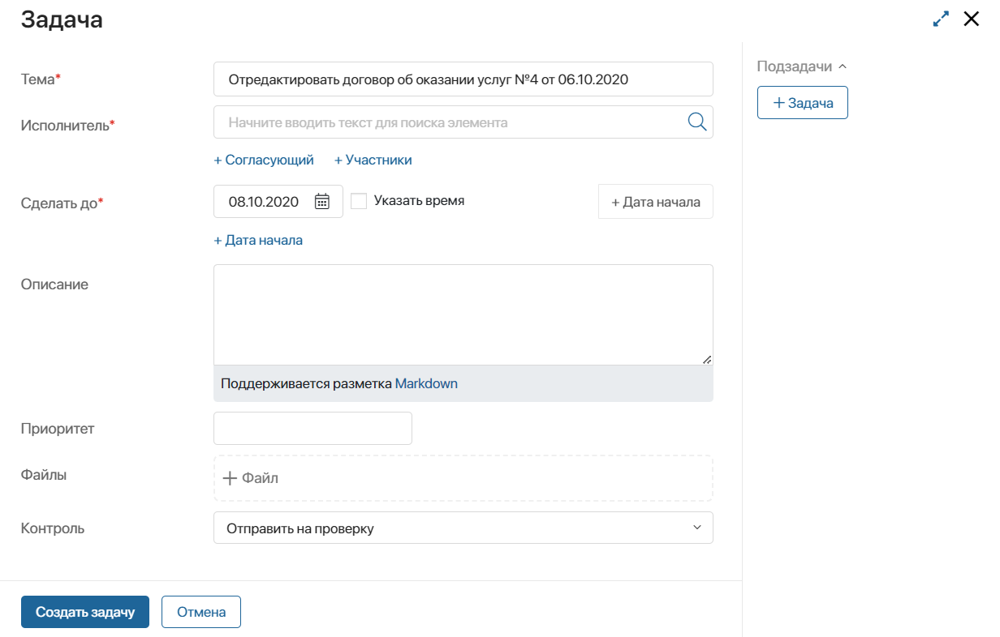
Определить исполнителей
Для задачи вы можете указать три роли:
- Исполнитель — сотрудник или группа сотрудников, которые отвечают за выполнение задачи. После создания задачи её можно переназначить, однако добавить дополнительных исполнителей нельзя. Если вы выбрали сотрудника, который отсутствует на рабочем месте, задача будет делегирована пользователю, указанному в настройках замещения;
- Согласующий — согласовывает постановку задачи;
- Участник — принимает участие в выполнении задачи. Он может просматривать карточку задачи, получать оповещения по ней наряду с ответственным и вести переписку в её #ленте. Можно указать несколько участников задачи, но отвечает за её реализацию сотрудник, указанный в поле Исполнитель.
Определите ответственных за задачу. Для этого в поле Исполнитель начните вводить имя пользователя, название группы, роли или элемента оргструктуры или нажмите на значок лупы.
Указывайте больше одного исполнителя, когда нужно поставить однотипную задачу на нескольких пользователей одновременно и просматривать результаты работы в одном месте. Например, чтобы попросить всех руководителей подготовить отчёт за месяц.
Обратите внимание, если вы указываете в поле Исполнитель группу, к которой относитесь сами, задача ставится на всех её участников, кроме вас. Чтобы вы также входили в список исполнителей, добавьте себя как пользователя.
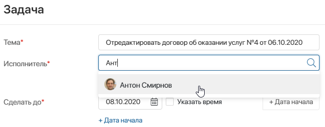
Подробнее об особенностях задач, назначенных на нескольких пользователей, читайте в статье «Задачи с несколькими исполнителями».
При необходимости укажите, кто будет согласовывать задачу и добавьте других участников. Для этого нажмите на кнопки + Согласующий и + Участники под полем Исполнитель.
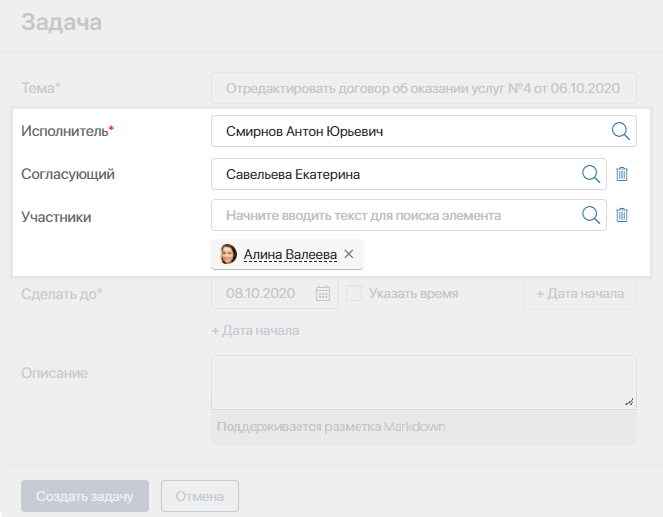
Указать сроки выполнения задачи
Поле Сделать до* позволяет указать сроки выполнения задачи с точностью до минуты. В дальнейшем указанную дату можно изменить. Запись об изменении отобразится в ленте задачи.
Если вы хотите указать, с какого момента следует начать выполнение задачи, используйте опцию + Дата начала.
После создания задача поступит исполнителю и автоматически добавится в личный календарь сотрудника. Событие начнётся в тот день, который выбран в качестве даты начала задачи, и закончится в день её завершения. Если день постановки задачи не уточняется, то событие будет запланировано на дату, указанную в поле Сделать до*.
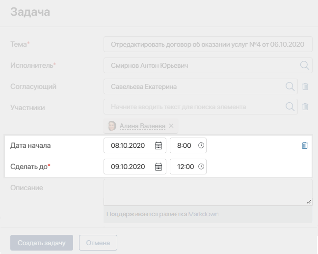
Добавить детали задачи
Детали задачи можно указать в поле Описание. Поддерживается разметка Markdown, что позволяет отформатировать текст.
В поле Приоритет укажите срочность исполнения задачи. Выберите Низкий, Средний, Высокий или Число. Для варианта Число можно указать любое значение, например, от 1 до 100. Сотрудники смогут находить задачи с высоким приоритетом с помощью поиска и выполнять их в первую очередь.
В поле Файлы можно добавить к задаче вложения. Для этого нажмите на поле и выберите нужные файлы или перетащите в него документы с локального компьютера. Вы также можете загрузить документы, хранящиеся в системе в разделе Файлы. Для этого нажмите на значок три точки в правом углу поля Файлы и выберите документ.
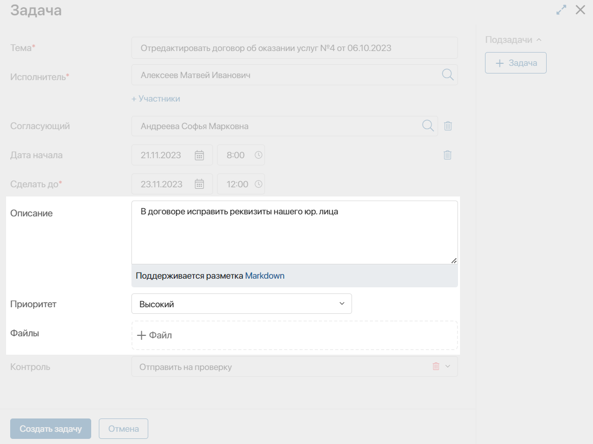
Контролировать выполнение задачи
После выполнения задачи исполнителем вы можете проверить результаты работы. Для этого в поле Контроль выберите одну из опций:
- Оповестить при выполнении — вы получите уведомление о выполнении задачи в #ленту. Если в задаче несколько исполнителей, уведомление придёт, когда работу завершат все;
- Отправить на проверку — когда ответственный выполнит поставленную задачу, вам придёт задача контроля результатов выполненных работ. Если исполнителей несколько, задача ставится, когда работу завершают все;
- Не требуется — выберите эту опцию, если вы не хотите контролировать выполнение задачи.
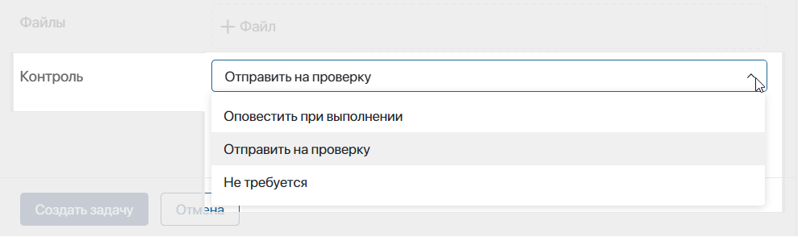
Подробнее о доступных опциях читайте в статье «Контроль исполнения».
Изменить задачу
Все созданные вами задачи отображаются в разделе Задачи > Исходящие. Чтобы найти определённую задачу, воспользуйтесь поиском по задачам.
Открыв карточку задачи, вы можете:
- переназначить её на другого исполнителя;
- перенести сроки выполнения;
- отредактировать описание, приоритет, загруженные файлы;
- изменить список участников.
Запись об изменении отобразится в ленте задачи. Подробнее о действиях с поставленной задачей читайте в статье «Действия с задачей».
Доступ к задачам
По умолчанию в ELMA365 просматривать карточку задачи могут все пользователи. Быстрый переход к карточке задачи зависит от роли сотрудника, участвующего в её постановке и выполнении. Пользователи по‑разному могут найти и открыть задачу:
- автор — в разделе Задачи > Исходящие;
- исполнители и согласующий — в разделе Задачи > Входящие;
- руководитель автора или исполнителя по оргструктуре — в разделе Задачи > Мой отдел, нажав на имя нужного сотрудника;
- участники — в разделе Задачи > Участвую;
- остальные пользователи системы — сотрудник может перейти в карточку задачи, если его упомянули в ленте задачи. Кроме того, открыть задачу можно из элемента приложения, по которому она поставлена, если есть доступ к элементу типа Просмотр и Управление процессами.
Пользователи, указанные в задаче, могут изменять детали и выполнять другие действия с ней. Остальные сотрудники могут только просматривать карточку и оставлять комментарии в ассоциированной ленте. Подробнее о том, как редактировать задачу, читайте в статье «Действия с задачей».
Оповещения о новых задачах
По умолчанию исполнители получают уведомления о назначении задач в #ленту.
Каждый сотрудник может установить персональные настройки оповещений в профиле пользователя на вкладках:
- Оповещения — здесь можно отключить уведомления о задачах или изменить настройки для мобильного приложения;
- Задачи — на этой вкладке вы можете включить:
- отправку уведомлений о задачах на электронную почту, указанную при регистрации аккаунта пользователя в системе;
- возможность выносить резолюции из входящих писем по задачам согласования файлов и элементов приложений. Убедитесь, что администратор настроил корпоративную почту, с которой будут приходить уведомления о задачах согласования;
- напоминания о приближении срока задач.